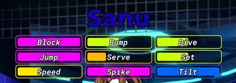
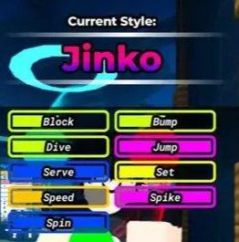
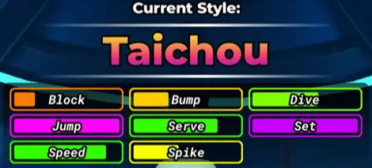
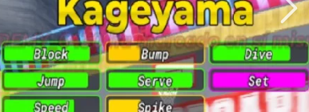

about me | schedule| fanpage
Volleyball lengends
"fanpage"
visit roblox to play this game
these are the best hitter in my opinion
 |
 |
 |
these are the best setters in my opinion
 |
 |
 |
there are more charaters but these are the mains one you should aim to get unless you want to be libero then i say kimero. Sanu is the best character in the game for me becuase of his tilt.